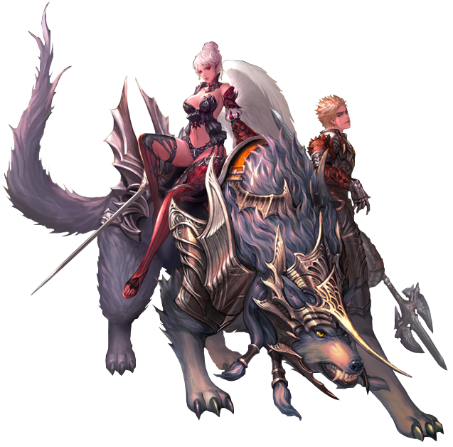

Descargas
Descargar Cliente

Descarga el cliente de Lineage 2 Full.
Descargar Patch
Descarga Patch/updater.
Con más de 20 años de experiencia en el apasionante mundo de Lineage 2, hemos creado un servidor único diseñado por y para jugadores. Sabemos lo que hace que este juego sea especial: la emoción de las batallas épicas, la profundidad del contenido y la comunidad que lo hace vibrar.
Nos comprometemos a ofrecerte un entorno que respete la esencia clásica de Lineage 2, optimizado para una jugabilidad fluida y emocionante.
Disfruta de actividades únicas diseñadas para desafiarte y mantener la diversión.
Escuchamos a nuestra comunidad y trabajamos continuamente para mejorar la experiencia de todos los jugadores.
Un enfoque cuidadoso para equilibrar las clases y el contenido, asegurando que todos los jugadores puedan disfrutar al máximo.
Nuestra misión es construir un servidor donde la pasión por Lineage 2 se convierta en una aventura inolvidable. ¡Únete a nosotros y sé parte de esta épica comunidad!
Descarga el cliente de Lineage 2 Full.
Descarga Patch/updater.